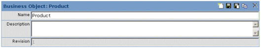
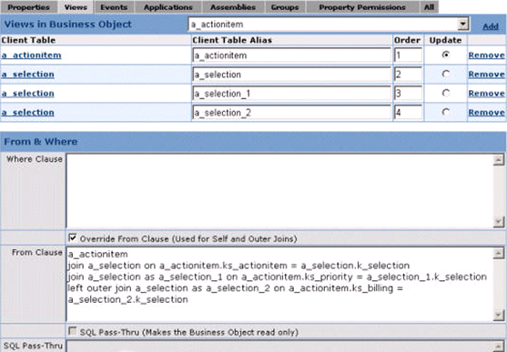

Create a business object
- Start the Application Administrator tool.
- From the Business Information category in the left pane, select Business Objects.
- In the Business Object box, enter a unique name of your new business object. This name is referenced by your Field Service.
-
Enter a description for this new business object. The Business Object box should look similar to the one shown in the next graphic.

- Click the Save icon to save your new business object.
- Click the Views tab to display the Views in Business Object form.
- From the Views in Business Objects list, select the view (client table) that you use to populate your business object.
- Repeat the previous step to add as many views as required to populate this business object. These subsequent view/client tables may contain pertinent foreign key columns.
- For each view/client table, specify a unique client table alias. This alias is used in any FROM and/or WHERE clause that you define.
- In the Update column, click the Update button for the table that need to be updated when you save the business object. Only one table can be marked as updatable on the device.
- In the Where Clause box of the From & Where section, enter the appropriate WHERE Transact-SQL to determine the condition(s) under which the specified client table view rows should be returned. This WHERE clause is started on the Pocket PC device, not on the server.
Here is an example of a WHERE clause:
For the client tables, a_SelectionType (with the alias a_selection and the primary key k_selection) and a_product (with the alias a_product and the foreign
key k_selection):
a_product.k_selection = a_selection.k_selection
By default, the device automatically generates a FROM clause using the following format:
~
client_table_name as client_table_alias[, …client_table_name as client_table_alias]~ for example, ~~~a_actionitem as a_actionitem_1, a_selection as a_selection_1, a_selection as a_selection_2`
It is important to note that this FROM clause does not include any JOIN statements.
To override this auto-generated FROM clause and provide a different FROM clause, (perhaps including a JOIN or OUTER variant), select the Override FROM Clause box. The From Clause box becomes available.
In the From Clause box, enter your alternate FROM Clause, being sure to reference the client table view alias instead of the table name.
Note: Do not include the FROM keyword when specifying a FROM clause using the Application Administrator tool. The Application Administrator tool includes the FROM keyword in the generated SQL.
Here is an example FROM clause:
For the client tables a_selection (with the aliases a_selection, a_selection_1, and a_selection_2 and the primary key k_selection) and a_actionitem (with the alias a_actionitem and foreign keys ks_actionitem, ks_priority, and ks_billing): a_actionitem join a_selection on a_actionitem.ks_actionitem = a_selection.k_selection join a_selection as a_selection_1 on a_actionitem.ks_priority = a_selection_1.k_selection left outer join a_selection as a_selection_2 on a_actionitem.ks_billing = a_selection_2.k_selection
This is how the above FROM clause appears in the Conductor tool window:
